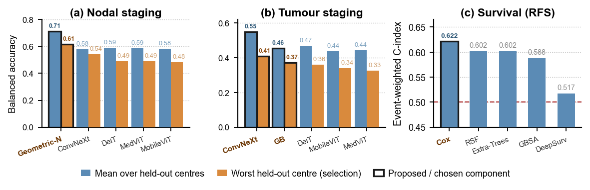

MICCAI 2026 · HECKTOR Challenge
Geometry Meets Metabolism: Interpretable Segmentation, Staging, and Prognosis in Head and Neck PET/CT
Ranked in the top 15 of the challenge
The challenge pools head-and-neck PET/CT scans from several hospitals and asks three clinical questions at once: outline the primary tumour and the involved lymph nodes, assign the tumour and nodal stage, and predict recurrence-free survival. We built one pipeline for all three, and designed every component for stability across centres rather than for the leaderboard.
That constraint decided the design. Nodal stage is read directly off a few geometric measurements of the segmented nodes, chiefly a greatest-dimension diameter that mirrors the size criterion a radiologist already uses, then refined by a fixed rule on metabolic activity. Tumour stage fuses a tabular classifier with a convolutional network on a tumour-centred crop. Survival is a Cox model over clinical variables and predicted stage, with imaging deliberately left out because it is the most scanner-dependent part of the pipeline. Every staging and survival component was selected by its accuracy on a hospital held out during development, not by its average.
Two results I did not expect: for nodal staging the plain geometric head beat every image model we tried, on the average centre and on the weakest one; and for survival, nothing with more capacity beat a linear model.

